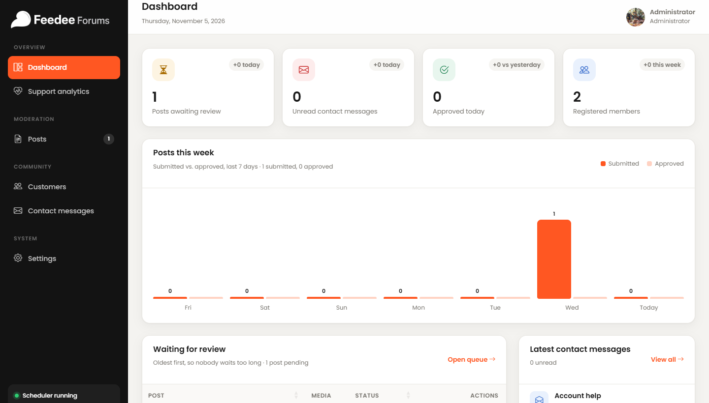
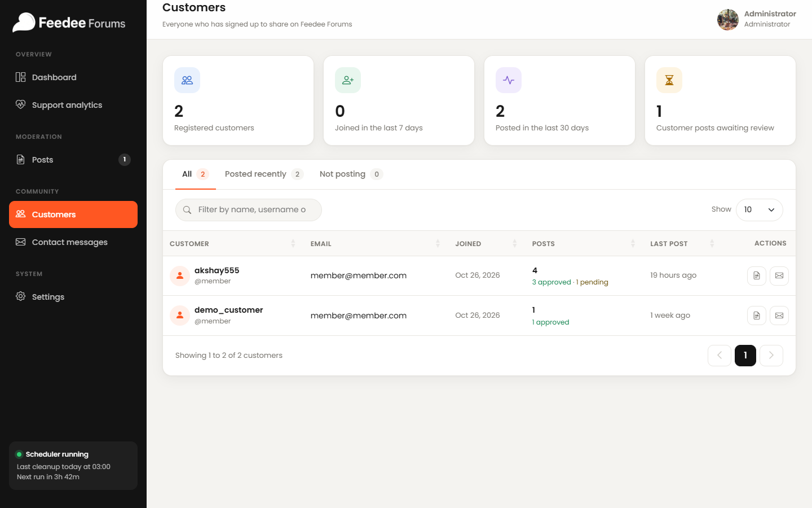
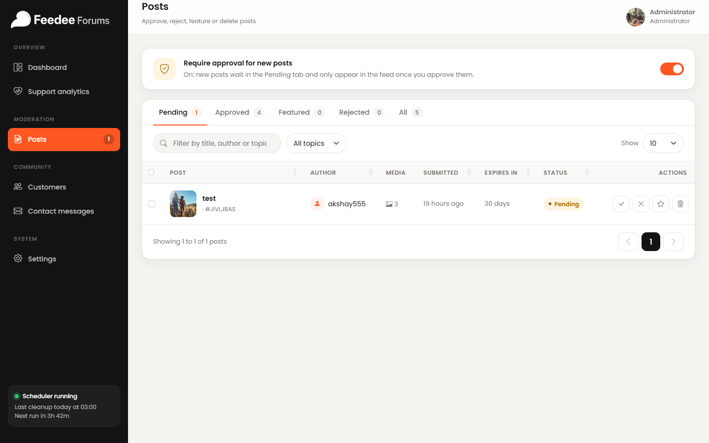
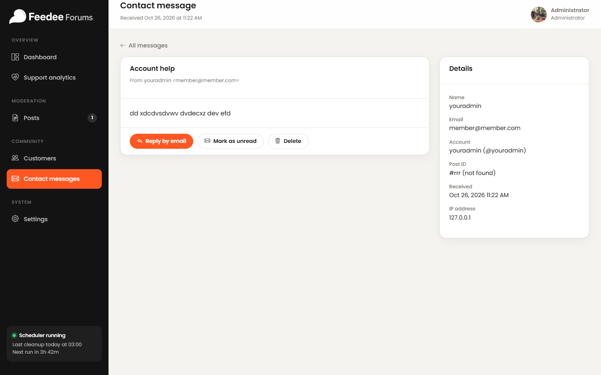
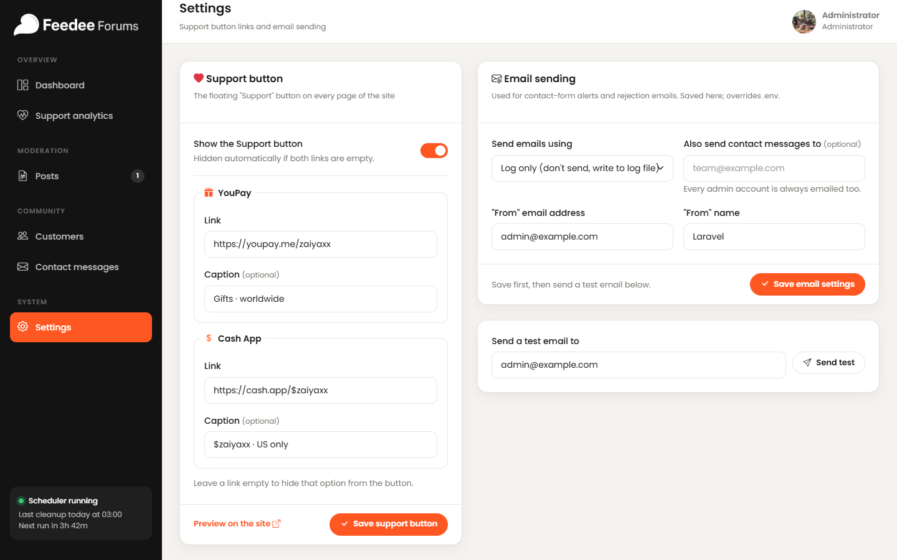
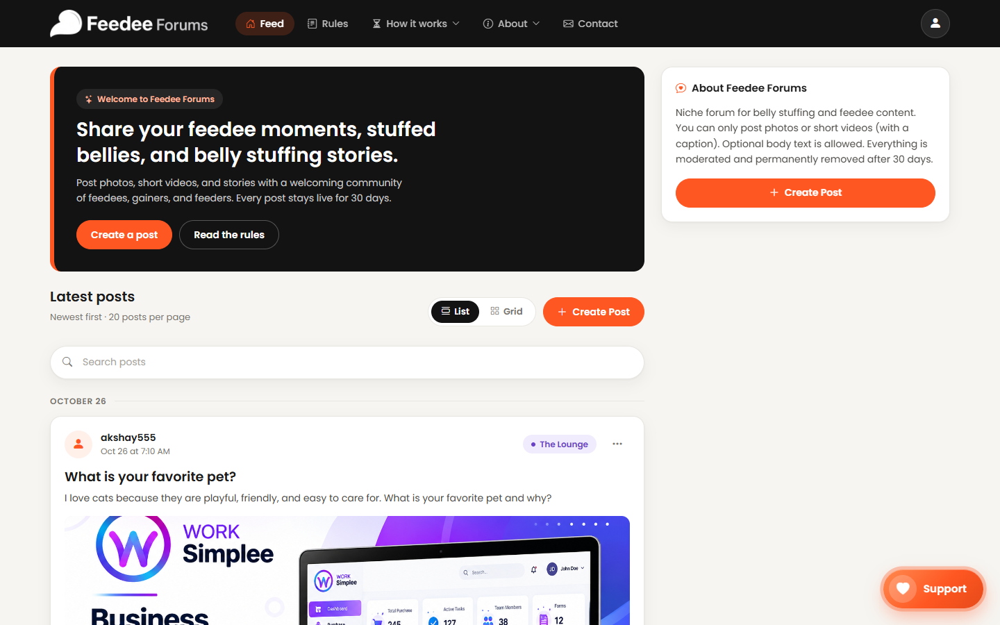
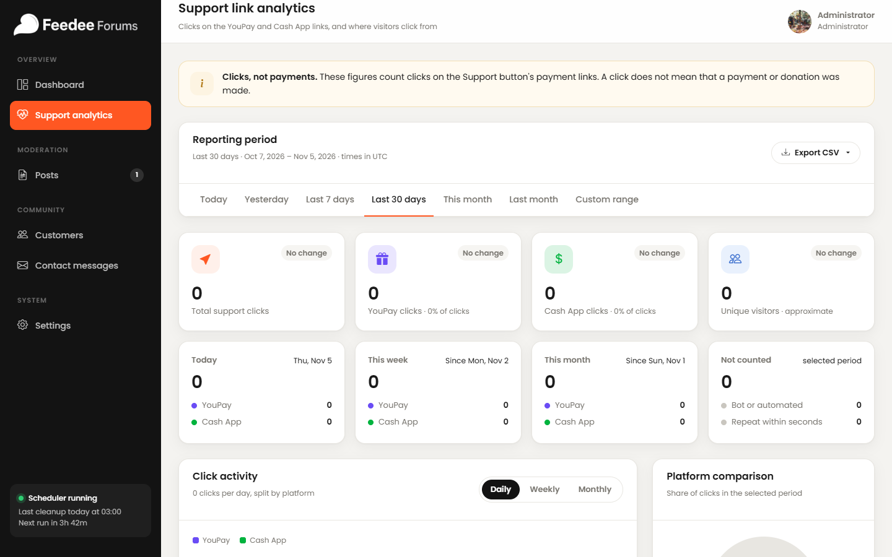

A practical manual for administrators who manage content, members, messages, settings, and support activity on Feedee Forums.
https://feedeeforums.com/
Document
Feedee Forums Admin Panel User Guide
Audience
Site administrators / client operators
Version
1.0 · November 2026
Contents
Table of contents
1. Introduction3
2. Admin login4
3. Dashboard5
4. Customer management7
5. Post management8
6. Contact messages10
7. Website settings11
8. Support button & analytics13
9. Other admin features15
10. Security best practices16
11. Troubleshooting & FAQ17
Appendix A — Feature summary18
Appendix B — Unavailable / incomplete features19
About this guide
This guide documents only features that exist in the current Feedee Forums Laravel application. Screenshots were captured from the live admin interface. Personal emails and names in screenshots have been masked where practical.
Section 1
Introduction
The Feedee Forums admin panel is the control centre for running the community website at https://feedeeforums.com/. Administrators use it to moderate posts, review member activity, respond to contact enquiries, configure the public Support button, monitor support-link clicks, and manage email delivery settings.
Purpose of the admin panel
Keep the public feed safe, friendly, and on-topic.
Approve, reject, feature, or permanently delete posts and their media.
Monitor registered customers and their posting activity.
Read and manage messages submitted through the contact form.
Control Support payment links and review click analytics.
Configure outbound email used for rejection notices and contact alerts.
How administrators manage the website
Only accounts with the admin role can open /admin. After login, admins are redirected to the admin dashboard. The dark sidebar provides navigation between all working admin sections. Changes made in Posts, Settings, and Contacts affect the live public website immediately.
Overview of available features
Section
What you can do
Dashboard
View pending posts, unread messages, approvals, member counts, weekly chart, and support overview
Support analytics
Analyse Support-button payment-link clicks by period, country, platform, and page
The Dashboard is the home screen of the admin panel. It summarises moderation workload, membership, and recent support activity so you can decide what needs attention first.

Figure 3 — Dashboard overview with sidebar navigation and summary cards.
Statistics and summary cards
Card
Meaning
Posts awaiting review
Number of posts currently in Pending status. Clicking opens Posts.
Unread contact messages
Contact form messages not yet opened. Clicking opens Contact messages.
Approved today
Posts approved today, compared with yesterday.
Registered members
Customer accounts, with new sign-ups in the last 7 days.
Understanding dashboard information
Posts this week — bar chart of submitted vs approved posts for the last 7 days.
Waiting for review — oldest pending posts, with quick moderation actions and a link to the full queue.
Latest contact messages — newest enquiries with a link to the full inbox.
Support analytics strip — recent Support-button activity with a link to the full Support analytics report.
The sidebar footer shows whether the Laravel scheduler appears to be running (important for 30-day post cleanup).
How to navigate the admin panel
Sidebar
Use Overview, Moderation, Community, and System groups to open Dashboard, Support analytics, Posts, Customers, Contact messages, and Settings.
Top bar
Shows the current page title, date or short description, and your administrator menu (View site / Profile / Log out).
Section 4
Customer management
Customers are registered member accounts (non-admin users) who can create posts on the public site.

Figure 4 — Customers list with activity stats and filters.
View registered customers
Open Customers in the sidebar. Summary cards show total registered customers, joins in the last 7 days, members who posted in the last 30 days, and customer posts awaiting review.
Search and filter customers
Tabs: All · Posted recently · Not posting
Search: filter by name, username, or email
Show: choose 10 / 25 / 50 rows per page
View customer details
Each row shows the display name, username, email, join date, post counts (approved / pending / rejected), and last post time.
Available customer actions
Action
What it does
View posts (document icon)
Opens the Posts page filtered to that customer’s name. Disabled when the customer has no posts.
Email customer (envelope icon)
Opens your email client with a mailto link to the customer.
Note
The current Customers page does not include edit, suspend, delete-account, or password-reset actions for members. Account changes are limited to viewing activity and contacting the member by email.
Section 5
Post management
Posts is the main moderation workspace. Use it to review submissions, publish or reject content, feature posts, and permanently remove posts with their media.

Figure 5 — Posts page with approval switch, status tabs, and moderation actions.
Require approval for new posts
Off: new posts appear in the public feed immediately. You can still reject, feature, or delete them later.
On: new posts start as Pending and stay hidden until approved.
Understand moderation status
Status / tab
Meaning
Pending
Waiting for admin review
Approved
Live in the public feed
Featured
Pinned in the Featured area above the chronological feed
Rejected
Not shown publicly; author is emailed the reason
All
Every post regardless of status
Approve, reject, feature, or delete
Open Posts and choose the relevant tab (for example Pending).
Optionally search by title, author, or topic, or filter by topic.
Use the row action buttons:
Approve (✓) — publish to the feed and start the 30-day lifetime.
Reject (✕) — choose a reason (and optional note); the author is emailed.
Feature (★) — pin at the top of the feed (also approves if pending).
Delete (trash) — permanently remove the post and all media after confirmation.
For bulk work, tick several posts and use the bulk bar: Approve, Feature, Reject, Delete.
Image and video management
Each post row shows media counts (photos / videos) and a thumbnail when photos exist.
Click the post title to open the public post preview in a new tab and review every photo/video before approving.
Deleting a post removes original files and generated thumbnails from storage. This cannot be undone.
30-day automatic removal
Approved posts expire 30 days after they go live. The Posts table shows remaining days under Expires in. Cleanup is performed by the Laravel scheduler. The Dashboard sidebar indicates scheduler status. On Hostinger, a cron entry should run php artisan schedule:run every minute.
Section 6
Contact messages
Messages submitted through the public contact form appear here for administrators to read and handle.
The detail page shows the full message plus sender details, linked account (if any), optional post reference, received time, and IP address.

Figure 7 — Contact message detail with reply, unread, and delete actions.
Managing enquiries
Action
Purpose
Reply by email
Opens your mail client addressed to the sender
Mark as unread
Returns the message to the unread queue
Delete
Permanently removes the message after confirmation
Typical workflow: open new messages daily → reply from your email → leave as read for records, or delete when no longer needed.
Section 7
Website settings
Settings controls the public Support button and the email system used for contact alerts and post-rejection notices.

Figure 8 — Settings: Support button configuration and email sending.
Support button settings
Setting
Effect on the public website
Show the Support button
Turns the floating Support button on or off site-wide
YouPay link / caption
Payment option shown in the Support dial
Cash App link / caption
Second payment option in the Support dial
Leave a link empty to hide that option.
If both links are empty, the button is hidden automatically even when enabled.
Click Save support button, then use Preview on the site to verify.
Email sending settings
Send emails using: Log only (writes to the server log) or SMTP server.
Also send contact messages to: optional extra recipient. Every admin account is always emailed too.
SMTP host / port / encryption / username / password: required when SMTP is selected. Password is stored encrypted; leave blank to keep the saved password.
From email / From name: appear on outbound messages.
Precautions
Incorrect SMTP settings can stop rejection emails and contact alerts. Always click Save email settings, then Send test to your own address before relying on production mail.
Section 8
Support button & analytics
Floating Support button
When enabled in Settings, a floating Support button appears on public pages. Visitors can open YouPay or Cash App links from the dial. Admin clicks are not tracked the same way as visitor clicks.

Figure 9 — Public website showing the floating Support button (bottom-right).
Support interaction tracking
The application records clicks on Support payment links. These are clicks, not payments. A click never proves that a donation was completed.

Figure 10 — Support link analytics with period filters and totals.
Available analytics (currently implemented)
Reporting periods: Today, Last 7 days, Last 30 days, This month, Custom range
Totals: total support clicks, YouPay clicks, Cash App clicks, approximate unique visitors
Fixed period cards and “Not counted” filtered clicks
Country breakdown (requires GeoIP database import on the server)
Daily statistics and recent activity list
CSV export: Country report, Daily statistics, Every click
How administrators monitor support activity
Open Support analytics from the sidebar.
Choose a reporting period.
Review platform split, countries, and recent activity.
Use Export CSV when you need a spreadsheet for the client or accounting follow-up.
Section 9
Other admin features
In-app admin guide
An HTML admin guide is available at /admin/docs. It covers reviewing, featuring, deleting posts, reports guidance text, cleanup cron notes, and moderation tips. It is not linked in the sidebar in the current build, but the route is active for signed-in admins.
Profile
From the administrator menu, Profile opens the shared member profile editor where the logged-in admin can update account details and password.
View site
View site opens the public feed so you can verify how moderated content appears to visitors.
Scheduler / cleanup indicator
The sidebar shows a scheduler status widget. Automatic 30-day post deletion depends on the server cron calling Laravel’s scheduler.
Reports page status
A /admin/reports view exists in the project, but it is presently a static mock-up with sample figures and is not wired to a working reports backend. Do not treat it as a live moderation tool. See Appendix B.
Section 10
Security best practices
Protect administrator credentials. Store them in a password manager. Never place them in shared documents or chat.
Use strong passwords and change them if a device is lost or access may have leaked.
Log out after finishing administrative work, especially on shared computers.
Avoid sharing administrator access. Create separate admin accounts if multiple people need access.
Be careful when deleting. Post deletion removes media forever. Contact message deletion cannot be undone.
Treat contact IPs and emails as private. Do not publish reporter or sender details.
Test email settings with a test send before rejecting posts in production.
Section 11
Troubleshooting & FAQ
I cannot log in to /admin
Confirm you are using an account with the admin role.
Try logging in at /login first, then open /admin.
Reset the password with Forgot password if needed.
Pending posts are not appearing in the feed
If “Require approval for new posts” is on, approve them from Posts → Pending. If it is off, new posts should appear immediately unless rejected or deleted.
Images or videos are missing
Open the post from the admin table to confirm the media still exists.
If the post was deleted or expired after 30 days, media is permanently removed.
Check that storage/public links are correctly configured on the server.
Contact messages are not arriving by email
Open Settings → Email sending and verify SMTP details.
Send a test email.
If the mailer is “Log only”, messages are written to the application log instead of being delivered.
You can still read every submission under Contact messages in the admin panel.
Dashboard numbers look unexpected
Cards count live database records. “Approved today” includes auto-approved posts (when approval is off) based on creation/moderation time. Refresh the page after moderating.
Support analytics countries show “Unknown”
Country detection needs the GeoIP database. On the server, run the project’s GeoIP import command (documented in the Support analytics page notice) and ensure the scheduler can refresh it monthly.
Appendix A
Feature summary
Feature
Status
Notes
Admin login / logout
Working
Role-gated /admin area
Dashboard stats & chart
Working
Pending, messages, approvals, members
Post moderation
Working
Approve, reject, feature, delete, bulk actions
Post approval switch
Working
On Posts page
Customer list
Working
Search/filter; view posts; mailto
Contact inbox
Working
Read/unread, reply, delete
Support button settings
Working
YouPay + Cash App
Mail settings + test
Working
Log or SMTP
Support link analytics
Working
Ranges, platforms, CSV export
30-day auto deletion
Working
Requires server scheduler/cron
In-app /admin/docs guide
Working
Route exists; not in sidebar
Appendix B
Unavailable or incomplete features
These items were found during inspection but should not be treated as finished client-facing tools yet:
Item
Why it is excluded / limited
Admin Reports UI (/admin/reports)
Static mock page with hard-coded sample statistics; no working backend controller for real member reports.
Customer edit / ban / delete
Not implemented on the Customers page.
Assigning staff roles from UI
No admin UI to promote/demote users.
In-panel reply composer for contacts
Reply uses external mailto only.
Sidebar link to /admin/docs
Guide route works but is not listed in the current sidebar navigation.
Document control
Prepared for client delivery for https://feedeeforums.com/. Based on the Laravel codebase and screenshots captured from the admin panel. Version 1.0 — November 2026.